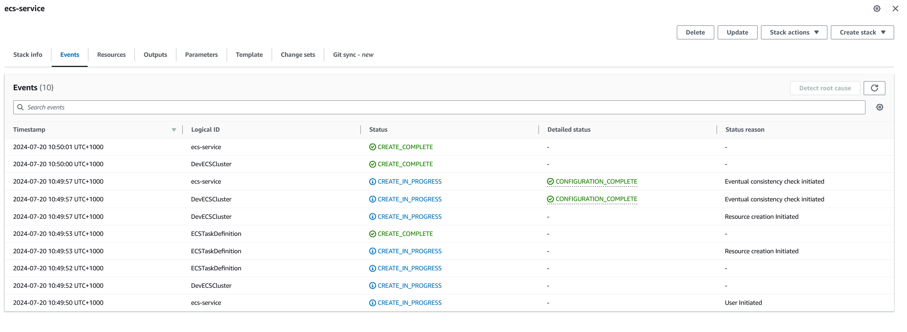

Deploying ECS Cluster, Containers and Load Balancer using CloudFormation
- Deploy the ECS cluster using the following CloudFormation code
AWSTemplateFormatVersion: '2010-09-09'
Resources:
# VPC
EcsVPC:
Type: AWS::EC2::VPC
Properties:
CidrBlock: 10.0.0.0/16
EnableDnsSupport: True
InstanceTenancy: default
# Public Subnet (Modify for private or VPC endpoints if needed)
PublicSubnet1:
Type: AWS::EC2::Subnet
Properties:
AvailabilityZone: !GetAZs None
VpcId: !Ref EcsVPC
CidrBlock: 10.0.1.0/24
MapPublicIpOnLaunch: True
# Internet Gateway (Modify for private or VPC endpoints if needed)
InternetGateway:
Type: AWS::EC2::InternetGateway
# VPC Gateway Attachment (Modify for private or VPC endpoints if needed)
VPCGatewayAttachment:
Type: AWS::EC2::VPCGatewayAttachment
Properties:
VpcId: !Ref EcsVPC
InternetGatewayId: !Ref InternetGateway
# ECS Cluster
DevECSCluster:
Type: AWS::ECS::Cluster
Properties:
ClusterName: MyFargateCluster
CapacityProviders:
- FARGATE
Outputs:
VPCId:
Description: VPC ID
Value: !Ref EcsVPC
ClusterName:
Description: ECS Cluster Name
Value: !Ref DevECSCluster
First we are going to validate the code using
aws cloudformation validate-template --template-body file://docs/labs/cloudformation/ecs/ecs-cluster-vpc.yaml
- Deploy the code using the CloudFormation
create-stack
aws cloudformation create-stack --stack-name dev-ecs-cluster --template-body file://docs/labs/cloudformation/ecs/ecs-cluster-vpc.yaml --capabilities CAPABILITY_IAM
The feature capabilities can be used to specify the capabilities of the stack. In this case we need to create IAM so we need to specify this capability.
- After this the ECS cluster stack is created

- Create an Application Load balancer